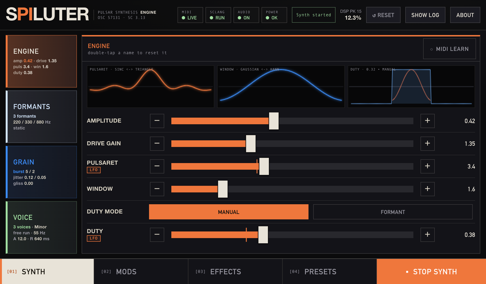
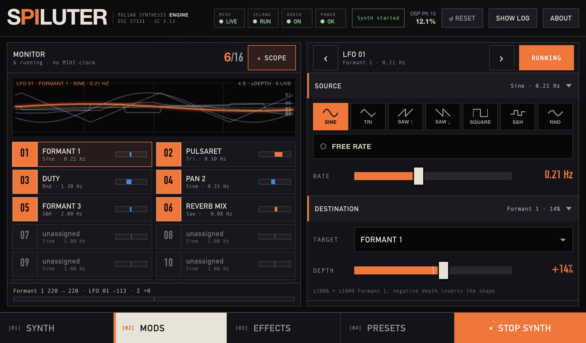
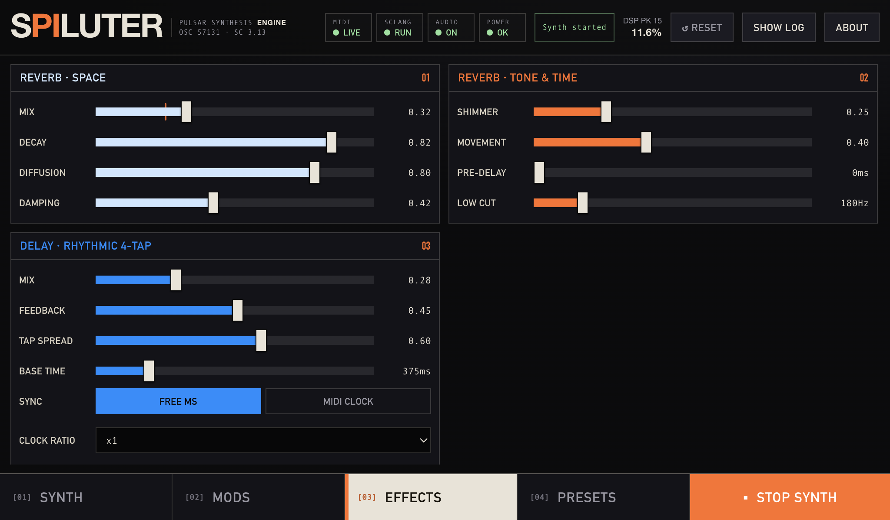

Sound, built from particles.
Spiluter is a small, self-contained synthesizer with a touchscreen. It makes sound out of streams of tiny sonic grains, so one fader can carry you from a clicking rhythm to a singing, vowel-like tone, and it puts every part of that sound under your fingers, an LFO, or a knob on your MIDI controller.

An instrument, not a program.
Switch it on and it starts up as a synthesizer: no desktop, no mouse, no menus to dig through. Everything is on four screens you reach from the bar along the bottom edge, and every control is big enough to hit with a finger in the middle of a set.
The sound comes from pulsar synthesis, a technique from the world of electroacoustic composition that rarely shows up in hardware. Instead of filtering an oscillator, you shape a stream of very short sound particles: how often they arrive, how long each one lasts, what is inside it, and which ones are left out. The results run from dry, ticking pulses through buzzing drones to hollow, vocal tones, and the borders between those are places you can play.
You can play it from a keyboard or pad controller, let it drone on its own, or lock its movement to the clock of the rest of your rig.
Take the tour.
These are the instrument's real screens. Pick one on the left, as you would on the device.
Engine: what each particle is made of. Pulsaret picks and blends the waveform, Window shapes its fade in and out, Duty sets how much of each pulse is sound and how much is silence. The three previews redraw as you move.
The rail on the left always shows the key values of all four sections, so you can read the whole patch at a glance. Hold − or + for fine steps, and double-tap a name to send that control back to its default.

Sixteen LFOs, each with seven shapes (sine, triangle, two saws, square, sample-and-hold, smooth random) and a target of your choice: formants, pulsaret shape, duty, pans, pitch, chord, the effects, and more. The left pane shows what every one is doing right now; the right pane edits the one you tapped.
Turn on MIDI clock for an LFO and it locks to your tempo, from one cycle every sixteen beats to sixteen cycles per beat. Press Run while the clock is ticking and it waits for the next beat, so movement always comes in on time.

A lush reverb in the style loved by Eurorack players: Decay and Diffusion for size and density, Damping to darken long tails, Movement to keep them alive, and Shimmer for the rising octave bloom. The tail keeps ringing after you let go of a note.
A four-tap delay for rhythm: Tap Spread fans four echoes out into a pattern, Feedback repeats the whole pattern. Set the time by hand or lock it to MIDI clock with straight, dotted and triplet-like ratios.

Thirty-two slots. A preset keeps the whole instrument: every fader, all sixteen LFOs and their routing, the effects, and the sample if you loaded one. Each slot draws its own small signature so you can find a sound by its look.
Recall is one tap. Name your presets on the device, and load your own samples from a USB stick to use as the particle in place of the built-in waveforms.
Made for hands and a rig.
Notes, drones or triggers
Three gate modes. Play it like a keyboard synth with held notes, leave it running as a drone you sculpt, or fire it with triggers. In note mode every new note restarts the LFOs, so each one begins the same way.
A knob for anything
Tap MIDI learn, tap a control, move a knob. That is the whole procedure. Every parameter can be mapped, including the switches, and the instrument ships with a sensible mapping already in place.
In time with everything else
Send it MIDI clock and the LFOs and the delay lock to your tempo. The detected tempo is shown on screen, and modulation started mid-bar lands on the next beat.
Chords from one key
Stack two, three or four voices into octaves, fifths, major, minor, sevenths, sus, diminished and more. One finger plays the chord, and an LFO can step through chord shapes for you.
Tone colour that stays in tune
Quantize ties the second and third formants to pure intervals of the first: a fifth above, an octave above, and twelve more. Sweep one fader and the whole vowel moves together.
You can see the sound
The screen draws the particle, its envelope and its duty as you change them, and marks on each fader where an LFO is currently pushing it. It teaches you the synthesis while you play.
Two more pages.
Pulsar synthesis, in plain terms
Where the idea comes from, what a pulsaret is, why rhythm turns into pitch, and what each family of controls does to the sound. Includes a small pulsar generator you can play in the browser.
Read the overview → [03]The hardware
The handful of parts that make up a Spiluter, what each one is for, how they connect, and the one part you should not economise on.
See the parts list →